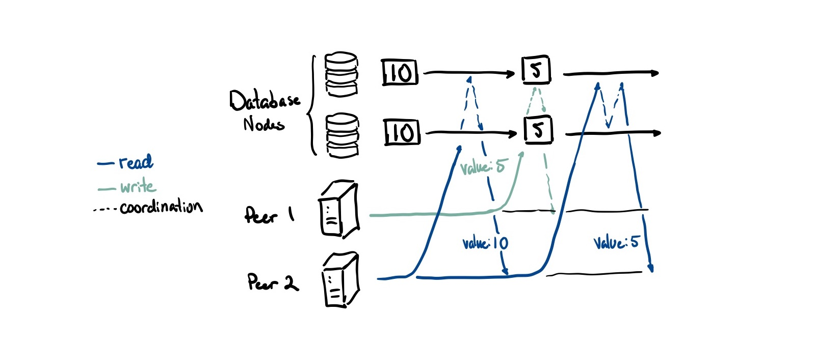
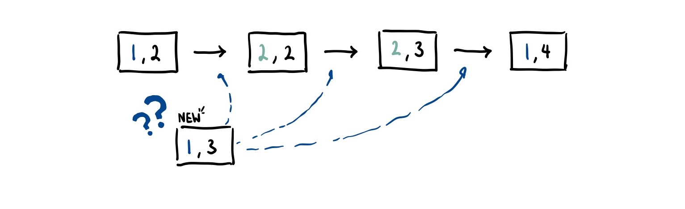
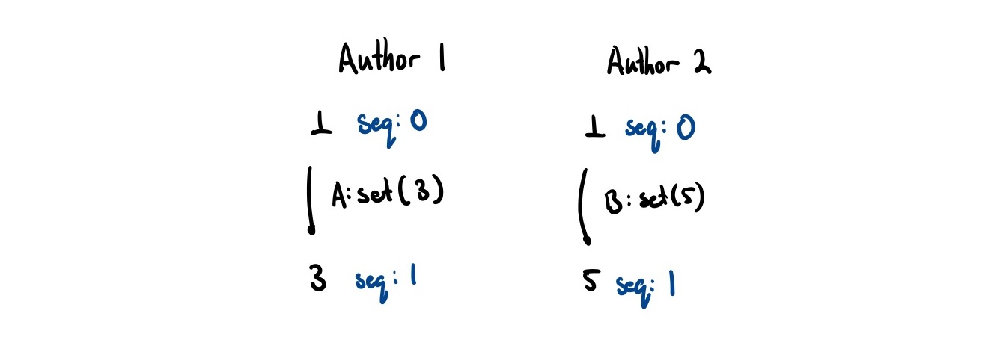
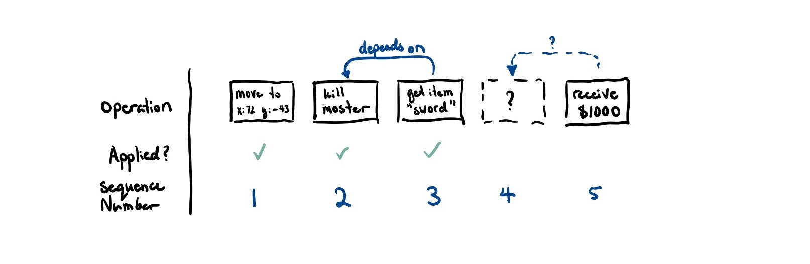
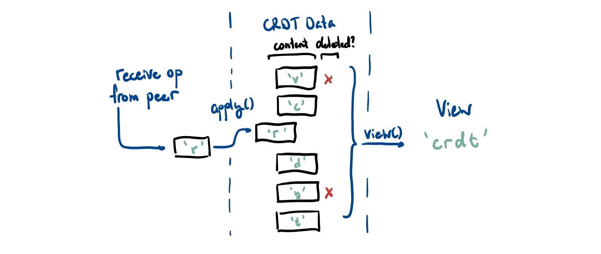
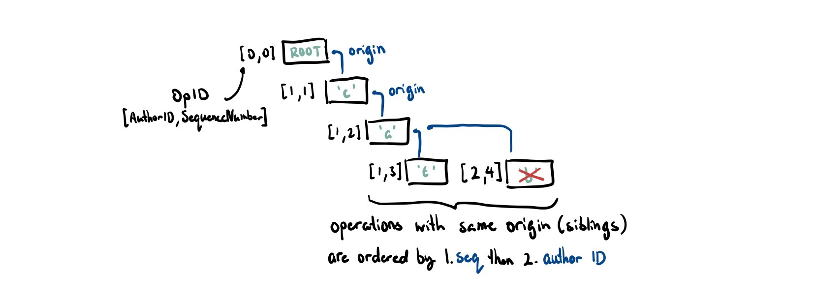
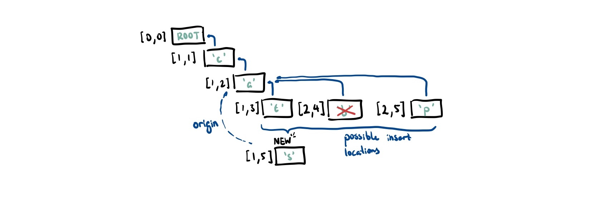
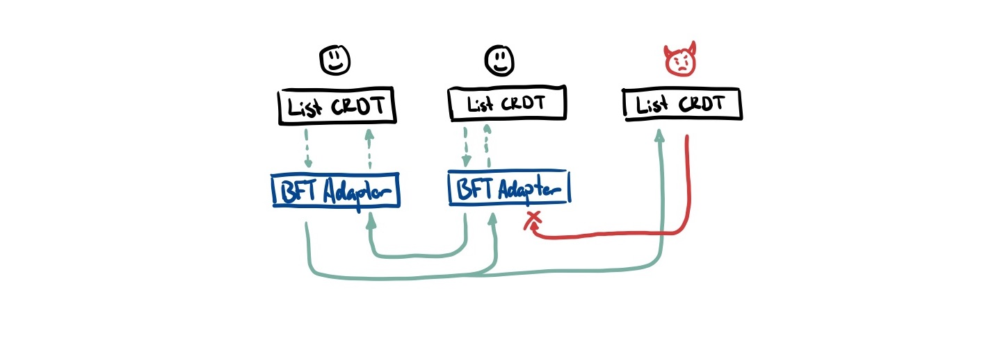
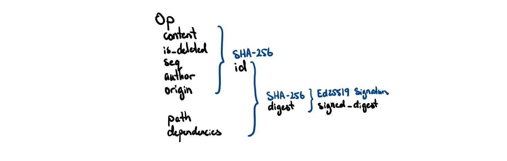

CRDTs are a family of data structures that are designed to be replicated across multiple computers without needing to worry about conflicts when people write data to the same place. If you’ve ever had to deal with a nasty git merge conflict, you know how painful these can be to resolve.
CRDTs mathematically guarantee that an application can safely update their local state without needing to coordinate with all of its peers. By avoiding the extra coordination overhead, they have very good latency properties and work well in scenarios where real-time collaboration is needed (e.g. text editing, presence, chat, etc.).
Over the past few years, really cool open source CRDT libraries like Automerge and Yjs have emerged that enable developers to easily add these replicated data types to their own applications. Their support for JSON means that most web-applications can just plug-and-play, enabling collaborative experiences to be created easily.
What normally would have taken weeks or months of engineering to setup infrastructure for a collaborative web experience can be done in a day, bringing us one step closer to a future where the internet feels more default-multiplayer, cozy, and alive with life.
I learn best through building so I set out to write my own CRDT library from scratch to grok what was going on under the hood. When I was first learning about it, I spent a good few months scratching my head trying to read the papers. A lot of the literature took a long time for me to understand and required me to learn a non-trivial amount about order theory and distributed systems.
I write this blog post mostly as a note to my past self, distilling a lot of what I’ve learned since into a blog post I wish I had read before going in. I hope you find this useful too.
As a brief warning, the target audience of this blog post are people who have worked with a bit distributed systems in the past and is curious about the realm of CRDTs. I try my best to explain any relevant terminology when it comes up but familiarity with the topics helps a lot!
This blog post is really long so use the Table of Contents at the top to jump to whatever section interests you the most!
How CRDTs differ from traditional databases
Before we really dive into CRDT internals, we first need to understand how they are different from databases. When I normally think of shared state, I think of databases. However, the guarantees that databases provide are really different than the ones CRDTs provide.
Traditional databases focus on a property called linearizability, which guarantees that all operations behave as if executed on a single copy of the data. We call this canonical view the primary site. Every read in a linearizable system, no matter what database node you read from, gives you an up to date value.

This is great for allowing developers to reason about distributed applications more easily (you just treat your distributed database like a single database). There are no conflicts by definition because there is only one authoritative view on what the right state is.
However it isn’t without downsides either. Achieving this property adds a lot of overhead because both writes and reads need to coordinate (the dashed lines in the diagram above) across all database nodes to ensure consistency. This creates an availability problem: if you can’t reach a majority of your nodes, you can’t process any operations.1
CRDTs kind of throw all of that out the window and embrace the eventual nature of the real world. In an often cited essay titled A Certain Tendency Of The Database Community, the author argues that trying to provide “single system image” semantics (read: linearizability) is fundamentally flawed and at odds with how systems operate in the physical world. The garden and the stream.
In the real world, it takes time for us to learn about things that are happening around us and around the world. It takes time for our mail to send, calls to go through, and light to travel between servers across the world. We can take inspiration from the real world and embrace a design that considers every member in the system as the primary site for the data that it generates.
This means we allow peers to actually have different states as long as they eventually converge to a correct result. By relaxing the constraint on needing a globally consistent result, we remove the need to wait for all of our replicas to agree. In more formal distributed systems language, we trade linearizability for a property called strong eventual consistency:
- All updates will eventually reach every node
- Every node that has received the same updates will have the same state
When should we use strong eventual consistency over linearizability?
It turns out that this is good enough most of the time. Conventional wisdom in the database world would agree that perfect data consistency is way too expensive in terms of both latency and bandwidth if changes happen frequently. Using eventually consistent approaches generally work better as temporary inconsistencies work out in most cases.
Two users might simultaneously withdraw money from an account and end up with more money than the account ever held. Would a bank ever want this behavior? In practice, yes. An ATM’s ability to dispense money (availability) outweighs the cost of temporary inconsistency in the event that an ATM is partitioned from the master bank branch’s servers. In the event of overdrawing an account, banks have a well-defined system of external compensating actions: for example, overdraft fees charged to the user.
from Eventual Consistency Today: Limitations, Extensions, and Beyond
What actually is a CRDT
Ok so after about 1000 words, you’re probably asking “wtf is a CRDT??“. Maybe we should define that now.
CRDT stands for conflict-free/commutative/convergent replicated data type. Funnily enough, there is no strong consensus on what the C actually stands for2. Regardless of the name, the tldr; is the same:
- You can write and read from your local copy of the data without needing to coordinate with other peers
- Over time, all nodes converge to the same state by sending each other state modifications/updates they have performed on their local data
- Because of the eventual nature of message delivery, there is no guarantee that the state across all the actors are consistent at any given moment
- If the CRDT is written properly, a view of a CRDT can only ever be out-of-date, but never incorrect
- Each operation contains the necessary metadata to figure out a deterministic way to merge any operations that may happen concurrently
- I’ll note here that the term ‘conflict-free’ is a little misleading. It’s not that conflict doesn’t ever occur, but rather that CRDTs are always able to determine how to resolve the conflict up front (without user intervention)
- CRDTs always try to preserve user intent and try not to lose data whenever possible
- If two people insert a character into a string at the same spot, it will try to keep both edits
- Note that these is inherently different from consensus methods. Collaboration involves keeping all edits and merging them. Consensus involves picking one of several proposed values and agreeing on it
Again, CRDTs are a family of data structures. There is no one single CRDT. You can make CRDTs that produce single values (registers), lists, maps, graphs, JSON, and many more I haven’t listed here. However, they can’t represent everything. A fundamental limitation here is that there are certain types of data structures (like sets) that cannot be made into CRDTs3. We’ll talk more about these limitations later.
Now equipped with a 30,000ft overview of CRDTs, let’s dive into how they resolve conflicts.
Ordering Messages
A small note: this part will be pretty heavy on theory. If that’s not your cup of tea, you can just assume that there exists a way to order operations and skip to the section titled Intuition behind CRDTs

There is a whole branch of math focused on how to order things called order theory. In the case of message ordering, we want to define some way to compare messages such that no two messages are considered chronologically equal (in academic terms, we define a total ordering). If we can do so, we’ve mathematically avoided conflicts. So how do we do that?
Your first intuition may be to just use clocks. However, it would be naive to just randomly trust two different clocks from two different machines. Clocks can drift out of sync, leap seconds happen, and users can change their system time. Keeping time is famously hard.
If we can’t trust actual clocks, what can we do? Well, we can use Lamport timestamps. These track logical time rather than actual wall time, meaning we count number of events that have occurred rather than seconds elapsed.
This timestamp is just a simple counter. For the rest of the blog post, we refer to this counter as the sequence number seq.
- All nodes start their counter at 0
- Every time we perform an operation locally, we increment our counter by one
- Every time we broadcast a message to our peers, we attach this counter
- Every time we receive a message, we set our timer to
max(self.seq, incoming.seq) + 1
If a.seq > b.seq then event must have happened after event . However, if a.seq == b.seq, we cannot be sure which event came first. This means that Lamport timestamps only give us a partial ordering, which means two identical sequence numbers might not correspond to the same unique event. For example, both nodes could emit an event with seq = 1 even though they are different events.

Thankfully, we can actually create a total ordering of events in a distributed system by using some arbitrary (but deterministic) mechanism to break ties. For CRDTs, if we give each node a unique ID, we can actually tie-break on this ID to provide a deterministic way to order concurrent events.
In pseudocode, we can create a comparison operation that looks something like the following:
// We assume this is unique for every node
type AuthorID = u8;
// A lamport timestamp
type SequenceNumber = u8;
// A CRDT Operation
struct Op<T> {
author: AuthorID,
seq: SequenceNumber,
content: Option<T>
}
// Compare based off of sequence number
// If there's a tie, tie-break on unique author ID
fn happens_before<T>(op1: Op<T>, op2: Op<T>) -> bool {
op1.seq < op2.seq ||
(op1.seq == op2.seq && op1.author < op2.author)
}Ordering solved!
Causality
Or so we thought… Let’s think about when it is safe for us to apply an operation that we have received locally.

Say that the largest sequence number we know of is 3. We receive an operation with sequence number 5. We know that we are missing the operation with sequence number 4. Can we still deliver 5?
If 5 does not causally depend on 4, then we actually can still safely apply this operation.
But we can’t figure out this causality information from just sequence numbers alone. If an event A causes another event B to happen, then a.seq < b.seq. However, we don’t know the converse. That is, if a.seq < b.seq, we cannot say that A caused B to happen.
It turns out the fix for this is actually quite easy. As we have a unique way of identifying each operation, we can just send along a list of operations it causally depends on. That way, if we receive a message and we know we’ve received all of its causal dependencies, it should be safe to deliver.
If we receive a message where we haven’t received all of its causal dependencies, then we can add it to a queue so that when the message does get delivered, we can apply it afterwards. In the above example, if message 5 marked 4 as a causal dependency, it would wait until 4 was delivered before also applying 5.
This means that as long as we declare the right causal dependencies, we can make certain things that don’t seem commutative (like list operations) actually commute.
Intuition behind CRDTs
Okay enough about theory, how do we actually go about making a CRDT?
Let’s survey what we have at our disposal so far (our assumptions):
- We can reliably send messages between peers
- We have a total ordering on the messages so we don’t get any conflicts
- We have some way of indicating causal dependencies
This gives us an ever-growing pile of messages that are deemed ‘safe’ to apply. Here is probably a good time to make a distinction between the data in the CRDT itself and the view of that data.
- The data itself are the operations that are coming in
- The view is the data structure we compute from it (and what applications end up seeing)
struct CRDT<T> {
data: Vec<Op<T>>,
}
impl<T> CRDT<T> {
// modify self.data to include op
fn apply(&mut self, op: Op<T>);
// traverse self.data to produce the data structure
// we're actually interested in (a list in this example)
fn view(&self) -> Vec<T>;
}
Specifically, we never4 delete any operations from the internal data representation. The best we can do is mark them as deleted using a tombstone. Because a peer could technically reference any past operation as a causal dependency, we need to keep that metadata around.
Of course, we can’t go about willy-nilly trying to model every data structure this way. We can only have CRDTs of data structures which have invariants that do not depend on knowing the most up to date version of the data structure. From before, CRDTs are always guaranteed to have a correct state, but they may not have the most up-to-date value. This means that receiving any new operations should never break a CRDTs invariants.5
An example of something that CRDTs cannot model is an account balance that never decreases below zero. Say that you have $100 in an account. You spend 70 on your laptop and another 40 on your phone at the same time. Without waiting on the other transaction to arrive, there is no way for the CRDT to know whether these are valid! Even though both transactions are valid on their own, when done concurrently, they decrease the value to a negative value. Thus, CRDTs cannot model anything that requires maintaining global invariants.
List CRDTs (RGA Explained)
This seems to lead us to the biggest problem in the room: list CRDTs.
When you think of the API for a list, most operations are normally done by indexing. But isn’t this a global invariant? Don’t we need to know what other operations have been done to the list to figure out what the index of each character is?
This is not an easy problem to solve. It may also be a reason as to why the vast majority of CRDT projects focus on lists or text editing (which is essentially a list of characters). Luckily for us, some smart people have figured it out for us so we can look to what they’ve done for inspiration.
The key insight here is that instead of using relative addressing (e.g. positional indexing), we can use absolute addressing (e.g. using IDs).
Every time we insert an element into the list, we need to know the ID of the character we are inserting after. Then, we just place it somewhere between that element and the element following it.
So instead of saying “insert ‘A’ after the character at position 4” we say “insert ‘A’, with ID 5, and insert it after the character with ID 4”. This matches our intuition for how text editing happens anyways. When we imagine inserting text, we are inserting it after something. It wouldn’t make sense to insert the character “a” of “cat” before we insert the character “c”.
We can imagine saying that “c” caused “a” which caused “t”. Conveniently, we can encode this causality by making the causal parent of each item the character it was inserted after. Remember causal dependencies? Yeah those.

This forms a sort of causal tree and this is effectively how RGA, a list CRDT, structures its data internally. Let’s modify our Op to match that:
type OpID = (AuthorID, SequenceNumber);
struct Op<T> {
id: OpID,
origin: OpID, // causal dependency
author: AuthorID,
seq: SequenceNumber,
content: Option<T>,
is_deleted: bool // tombstone as we can't actually remove items
}When inserting a character we
- Find the origin (causal dependency). If it doesn’t exist, we queue it up for later.
- Starting at this node, all of its siblings were inserted concurrently. We look through the list of siblings until we reach a node that we are greater determined by the happens-before comparison we defined6. Recall that we sort operations first by their sequence number then tie break by the author ID.

In the example above, 's' has 'a' as its causal origin. Thus, we look at where to insert it in the list of children of 'a'. As 't' and 'b' both have smaller sequence numbers, we skip past these. Both 's' and 'p' have a sequence number of 5 so we tie-break on the AuthorID. As 1 < 2, we insert 's' between 'b' and 'p'.
To get the actual list this CRDT represents, we perform an in-order traversal over the tree and only keep nodes that are not marked as deleted.
Adding Byzantine Fault Tolerance for free (almost)
Up to this point, the CRDTs we’ve covered all work in trusted scenarios. These are scenarios in which you know all of the people participating and you trust them to not screw up the system for everyone else. For example, in a collaborative text document, you may limit collaborators to immediate colleagues who you trust to run the CRDT algorithm correctly and not attempt any funny business.
However, most of the interactions we have online are not in trusted scenarios. Luckily, we have servers to help mediate these interactions, dictate what is and what isn’t possible. Peer-to-peer systems, on the other hand, cannot rely on nodes always behaving the way the designers of the system intended. Here, we would like to be able to guarantee that the system continues functioning correctly even in the face of some nodes crashing, failing, and even acting maliciously.
The CRDTs we have been exploring so far do not work in these untrusted scenarios. That is, any one node can do something bad and cause state to diverge permanently. Not good.
To be more concrete, here are some examples of what a malicious actor can do:
- Send malformed updates
- Not forward information from honest nodes (an eclipse attack)
- Send invalid updates
- Messages that have duplicate IDs
- Send incorrect sequence numbers (an equivocation attack)
- Claim to be another user
Ideally, we want to adapt our existing CRDT algorithms to be resistant to these attacks while still allowing honest nodes to continue business as normal. This would allow us to use CRDTs in untrusted environments which opens up the door to lots of cool applications like games, social, and more.
To borrow a term from distributed systems, we want to make our CRDTs Byzantine fault-tolerant.7 The ‘Byzantine’ part of the name comes from the Byzantine Generals Problem, a situation where, in order to avoid catastrophic failure of the system, the system’s actors must agree on a concerted strategy, but some of these actors are unreliable and potentially malicious.
Notation wise, we denote the total number of nodes in the system . We denote the number of faulty/Byzantine nodes . Most consensus algorithms claim a tolerance of up to , which means they can tolerate up to |33% of the nodes being faulty. However, CRDTs require an even weaker bound. Remember that we are not trying to achieve consensus! All we really need to do is make sure that Byzantine actors can’t interrupt honest nodes from functioning properly.
In fact, we can reduce this to a problem called Byzantine Broadcast. Dolev-Strong, back in 1983, showed that it was possible to tolerate up to faulty nodes! This means that, as long as there are honest nodes and they are connected to each other, they can still function properly.8
Kleppmann detailed an approach in his paper Making CRDTs Byzantine Fault Tolerant that works without changing the internals of most CRDTs; it can be fully retrofit on top of it. We can create a ‘BFT adapter’ layer between the transport and application layer that is responsible for filtering out any Byzantine operations.

This approach has two major components we need to grasp:
- How we ensure Byzantine nodes don’t tamper with messages and pretend to be someone else (hashes + signed message digests)
- How we ensure messages don’t get blocked from reaching honest nodes (eager reliable causal broadcast with retries)
Hashes as IDs and Signed Message Digests
So here’s a little trick we can do. Our only requirement for operation IDs is that they uniquely identify a node. We can generate this ID by SHA256 hashing parts of the operation:
// Set the ID to the hash of its contents
pub fn set_id(&mut self) {
self.id = self.hash_to_id()
}
// SHA256 computation over an operation
pub fn hash_to_id(&self) -> OpID {
let fmt_str = format!(
"{},{},{},{},{}",
self.origin, self.author, self.seq, self.is_deleted, self.content
);
sha256(fmt_str)
}Then, to check if an operation is valid, we can just hash the contents again and see if it matches the ID. If a Byzantine actor tries to change any of these properties while trying to pass it off as a different ID, there will be a hash mismatch.
However, how can we be sure that a Byzantine actor hasn’t just pretended to be someone else? After all, they could just create an operation, set the author field to someone else, then hash the content so that there is no mismatch between hash and ID.
Luckily, we can use public key cryptography to help us out here. Each node has a private key they keep to themselves. Earlier, we also mentioned that each node should have a unique identifier. We can actually use the public key of each node as its AuthorID.
Then, whenever we send a message to another peer, we hash op.id to create a digest, and then sign it with our private key. This way, we can verify that the person who signed the message is the actual author.

// Create a digest to be signed
fn digest(&self) -> [u8; 32] {
// note that self.dependencies here is *different* from self.origin
// this will allow us to indicate causal dependencies *across* CRDTs
// which we will cover in more detail later
let fmt_str = format!("{},{},{}", self.id(), self.path, self.dependencies);
sha256(fmt_str)
}
// Sign this digest with the given keypair
fn sign_digest(&mut self, keypair: &Ed25519KeyPair) {
self.signed_digest = sign(keypair, &self.digest()).sig.to_bytes()
}
// Ensure digest was actually signed by the author it claims to be signed by
pub fn is_valid_digest<T>(op: Op<T>) -> bool {
let digest = Ed25519Signature::from_bytes(&self.signed_digest);
let pubkey = Ed25519PublicKey::from_bytes(&self.author());
match (digest, pubkey) {
(Ok(digest), Ok(pubkey)) => pubkey.verify(&self.digest(), &digest).is_ok(),
(_, _) => false,
}
}Ok great! We now have a unique way to identify both peers and operations. But there is one more thing here that is a little pesky to deal with: mutability.
When we create references to operations in this internal representation (e.g. we need to declare a causal dependency), we expect that the OpID of an operation stays static throughout its lifetime. However, because we now set OpID to be the hash of the content, updating a node would change its OpID all the time!
Does this mean we have to give up hashing the message content for fault tolerance? Fortunately not! There is one tiny hack that allows us to still use this hashing approach.
Instead of making a copy of the original operation and just changing the content (which would cause the operation to be considered invalid by our hash check!), we can produce an entirely new operation that has the original ID as a causal dependency. These ‘modification’ operations don’t actually get included in the internal representation of the CRDT, rather they modify it directly.
We can look to our list CRDT for an example. This delete function produces an entirely valid operation. This also makes sense from a causality perspective, we need to have delivered the original before trying to delete it!
fn delete<T>(&mut self, id: OpID, keypair: &Ed25519Keypair) -> Op<T> {
let mut op = Op {
id: PLACEHOLDER_ID,
origin: id, // the actual operation we are deleting
author: self.our_id,
seq: self.our_seq + 1,
is_deleted: true,
content: None,
signed_digest: PLACEHOLDER_DIGEST,
};
op.id = op.hash_to_id();
op.signed_digest = op.sign_digest(&keypair)
self.apply(op.clone);
op
}When we apply it, we treat these modification events differently from insertion events. We look for the origin and just update its deleted field.
With that small problem solved, we know that our operations are now tamper resistant!
Eager Reliable Causal Broadcast and Retries
Now, we just need to make sure that there is a way to get messages between honest nodes such that Byzantine faulty nodes can’t block it.
The easiest (and probably most naive) way to do this is through eager reliable broadcast:
- Each time a node receives a message with an
OpIDit has never seen before, it re-broadcasts that message to all its peers it is connected to - If we have been missing a causal dependency for a while, occasionally ask our peers if they have it
This makes sure that as long there is a connected subgraph of honest nodes, they can all still communicate.
However, there are a lot of potential optimizations to make here. It may be reliable but we broadcast messages for each actual operation. This is really expensive and may flood the network!
Thankfully, we can take inspiration from git to figure out how to do this more efficiently. Kleppmann, again, mentions this approach in Making CRDTs Byzantine Fault Tolerant.
Using cryptographic hashes of updates has several appealing properties. One is that if two nodes and exchange the hashes of their current heads, and find them to be identical, then they can be sure that the set of updates they have observed is also identical, because the hashes of the heads indirectly cover all updates. If the heads of and are mismatched, the nodes can run a graph traversal algorithm to determine which parts of the graph they have in common, and send each other those parts of the graph that the other node is lacking.
This project does not include this more advanced hash graph reconciliation but it is a direction for future work.
A JSON CRDT
Ok, we’ve seen now how we can create a Byzantine Fault Tolerant list CRDT. How can we make a JSON CRDT out of this?
Normally with JSON CRDTs, we just have a bunch of nested CRDTs.
- Values are LWW registers
- Lists are RGA lists
- Maps are lists of key-value pairs
Each nested CRDT also keeps track of its path (e.g. inventory[0].properties.damage) so that when CRDTs produce an event, this information is also included. This ensures that peers know how to route a message to the right CRDT.
However, we have to be careful about how we store this path. We can’t naively just use the index into the list as we saw earlier how this is unstable. A small workaround here is having the OpID be the index.
Additionally, in addition to the origin field, we added a dependencies field. The distinction between the two is that the origin field is for same-CRDT causal dependencies whereas the dependencies field allows for cross-CRDT dependencies. This is important if we want, for example, an inventory update to be causally dependent on a LWW register CRDT update.
There is one last challenge to account for: JSON has no schema; data types can change! For example,
- A sets
"a": ["b"] - B sets
"a": {"c": "d"}
How do we resolve this? The way Automerge and Yjs resolve this is by essentially using a multi-value register: they keep both values and punts the responsibility to the application choose the right answer.
But wasn’t the whole point of CRDTs that there is no conflict? With most applications, allowing users to set arbitrary JSON is not actually desirable. We can somewhat mitigate these problems by allowing the application developers to define a fixed schema ahead of time and validating all operations through this9.
Putting it all together into a crate
What if we took advantage of the type-safety and metaprogramming abilities of a language like Rust to automatically derive these strict-schema BFT CRDTs from programmer-defined data structures?
#[add_crdt_fields]
#[derive(Clone, CRDTNode)]
struct Player {
inventory: ListCRDT<Item>,
x: LWWRegisterCRDT<f64>,
y: LWWRegisterCRDT<f64>,
}
#[add_crdt_fields]
#[derive(Clone, CRDTNode)]
struct Item {
name: LWWRegisterCRDT<String>,
soulbound: LWWRegisterCRDT<bool>,
}After 5000 words of writing, I present to you the bft-json-crdt Rust crate. By using the provided CRDT types, programmers can instantly add CRDT functionality to their project.
There is a clear boundary between BFT and non-BFT operations as distinguished by data types to make sure that you don’t accidentally apply an operation to the wrong place.
// initialize a new CRDT with a new keypair
let keypair = make_keypair();
let mut base = BaseCRDT::<Player>::new(&keypair);
let _add_money = base.doc.balance.set(5000.0).sign(&keypair);
let _initial_balance = base
.doc
.balance
.set(3000.0)
.sign(&keypair);
let sword: Value = json!({
"name": "Sword",
"soulbound": true,
}).into();
let _new_inventory_item = base
.doc
.inventory
.insert_idx(0, sword)
.sign_with_dependencies(&kp1, vec![&_initial_balance]);
// do something here to send _new_inventory_item to our peers
// and on a remote peer...
base.apply(_new_inventory_item)Finally, I want to leave a word of warning. This is not a production ready library by any means. Although I do think this is a very solid proof of concept to demonstrate the potential of BFT CRDTs, it was still first and foremost for educational purposes.
I do not consider myself to be proficient at Rust so there might be lots of bad code smells/mistakes sprinkled throughout (please do PR if you have any fixes/suggestions)!
Future directions for CRDTs
The field of CRDTs is still quite young. I really think there is a lot of promising work being done in exploring how CRDTs can be used to enable collaboration on the web.
James Addison has been working on creating a real-time 3D engine using CRDTs. Projects like BLOOM work on trying to figure out at compile time what parts of program state require coordination and what parts don’t.
I’d love to see more exploration of CRDTs applied to games and other real-time things. I think there’s a lot of really cool work to be done with interpolation between operations. Think GGPO or perfect-cursors but for general CRDTs.
I hope that this blog post is a jumping point for new people interested in the space to really get their hands dirty and see what they can do with this technology. Again, checkout the codebase if you are interested in the internals and feel free to try to tackle anything under the ‘Further Work’ heading in the README!
Acknowledgements
If you are still reading by this point, I want to give you a huge thank you.
This was probably the most technically difficult project I’ve ever attempted, let alone finished. I felt like my conviction in my own abilities was tested multiple times and I can say I came out of the other side a better engineer. Thank you to the people who supported me as I struggled and stumbled around while trying to figure this project out.
There are a few people I’d like to thank individually. Thank you to Anson for listening to my long and incoherent rambles and celebrating my small wins. Thank you to Scott Sunarto and James Addison for proofreading. Thank you to Nalin Bhardwaj for helping me with my cryptography questions and Martin Kleppmann for his teaching materials and lectures which taught me a significant portion of what I’ve learned about distributed systems and CRDTs.
Footnotes
-
There are ways you can mitigate this by ‘predicting’ a successful outcome. However, if the actual write/read fails, we may need to rollback what the user sees which is not ideal from a user experience perspective ↩
-
NB: there is actually two main subtypes of CRDTs. CmRDTs or commutative replicated data types are based off of exchanging messages which contain single operations. CvRDTs or convergent replicated data types send their whole state. They are also sometimes called operation-based and state-based CRDTs respectively. The rest of this blog post assumes CRDT to mean operation-based CRDTs. ↩
-
The CALM Theorem states that anything that is logically monotonic (read: append-only) can be made into a CRDT. Non-monotonic things may ‘retract’ previous statements. ↩
-
Garbage collection + rebalancing technically requires achieving consensus on nodes in order to do this. “So, as far as I know, we would need a consensus protocol attached to the CRDT in order to get garbage collection / compaction.” (#2) ↩
-
This is formulated in a more formal manner in I-Confluence ↩
-
NB: performance enthusiasts will be quick to point out how to make this go faster. This is a terribly unbalanced tree. On average, it takes to find the origin and another to insert into the tree. There are clear optimizations to be made here. Yjs uses a doubly-linked list for a faster insert. They also use a cursor to track the last ~5-10 visited positions. It makes the assumption that editing patterns are not random (which is true for most applications). Diamond Types and the new Automerge use a range-tree to achieve find and insert ↩
-
For those coming from a more traditional distributed systems context, I will clarify that BFT means something different from a consensus context. Traditionally, this means getting some nodes to agree on a particular value. However, because CRDTs focus more on collaboration than consensus, we just want to prevent Byzantine actors from disrupting the functioning of the system. Byzantine actors can still send a bunch of ‘valid’ updates that may be unwanted. Imagine you sent a Google Docs link to a group of people and one of them is mucking around and inserting a bunch of images and removing information from the document. These would all be considered ‘valid’ operations in the sense that a ‘correctly’ functioning node could have done the same thing. ↩
-
See notes on the PSL-FLM Impossibility Result. We use a PKI assumption to get around this result. ↩
-
As pointed out by Bartosz Sypytkowski, this assumes that the schema is static and never changes, which may be not the case in many practical scenarios. Additionally, because of the nature of CRDTs, schema updates may be acknowledged by peers in different points in time. This is an ongoing area of research ↩